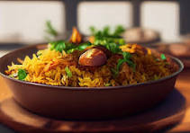
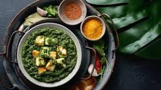
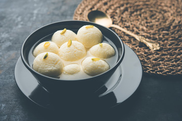

RECIPE
BOOK
It's hard to save money when food is flirting on you.

Food is symbolic of love where words are inadequate.
Don't count memories, make memories. And eat dessert!
CONTENTS
VEG PALAO
INGREDIENTS
- 1 cup basmati rice
- 2 cups mixed vegetables (carrots, peas, beans, corn, potatoes, etc.)
- 1 large onion, thinly sliced
- 2 tomatoes, chopped
- 1/4 cup cashews or almonds (optional)
- Fresh coriander (cilantro) and mint leaves (1/4 cup each)
- 2-3 green chilies, finely chopped
- 1 tablespoon ginger-garlic paste
- Spices: 2 tablespoons ghee, 1 teaspoon cumin seeds, 4-5 cloves, green cardamom pods, 2-inch cinnamon stick, 1 bay leaf, 1/2 teaspoon turmeric powder, 1 teaspoon cumin powder, coriander powder, Salt to taste.
DESCRIPTION
Vegetable Pulao is a delightful rice dish where fragrant basmati rice is cooked with a mix of colorful vegetables and aromatic spices, creating a flavorful and comforting one-pot meal.
STEPS TO PREPARE
- Soak 1 cup basmati rice for 30 minutes.
- Heat 2 tablespoons ghee in a pan.
- Add cumin seeds, cloves, green cardamom, cinnamon, and bay leaf; sauté until fragrant.
- Cook thinly sliced onion until golden.
- Add ginger-garlic paste, green chilies, and chopped tomatoes; cook until soft.
- Stir in mixed vegetables, turmeric, cumin powder, coriander powder, and salt.
- Add soaked rice, mix well.
- Pour 2 cups water, bring to a boil, then simmer covered until rice is cooked.
- Garnish with coriander, mint, and optionally, cashews or almonds.
- Fluff rice with a fork, serve hot with lemon wedges.
BIRYANI
INGREDIENTS
- 500g chicken or mutton
- 1 cup thick yogurt
- 1 tbsp ginger-garlic paste
- 1 tsp turmeric powder
- 1 tsp red chili powder
- 1 tsp garam masala
- 2 tsp biryani masala
- 1/2 cup fried onions
- Salt to taste
- 2 cups basmati rice
- 1-2 bay leaves, 4-5 cardamom pods, 4-5 cloves, 1-2-inch cinnamon stick
DESCRIPTION
Biryani is a delectable South Asian rice dish, featuring fragrant basmati rice and flavorful meat, cooked together with an aromatic blend of spices to create a delightful and richly textured one-pot meal.
STEPS TO PREPARE
- Mix chicken or mutton with yogurt, ginger-garlic paste, turmeric, red chili, garam masala, biryani masala, salt.
- Boil basmati rice with bay leaves, cardamom, cloves, and cinnamon until 70-80% cooked. Drain and set aside.
- In a heavy-bottomed pan, alternate layers of marinated meat and partially cooked rice, crafting a tantalizing fusion of textures and spices.
- Elevate the culinary tapestry with fried onions, fresh mint, coriander, saffron-infused milk, and ghee, contributing to a symphony of tastes and aromas.
- Intensify flavors by sealing the pot with aluminum foil or wheat flour dough, ensuring a perfect intermingling.
- Simmer on low heat for 20-25 minutes, tenderizing the meat and allowing rice to absorb the essence.
- Gently fluff with a fork, letting layers gracefully reveal. Serve this masterpiece hot, ready to be savored by those fortunate enough to partake in this symphony of taste.
PALAK PANEER
INGREDIENTS
- 200g paneer, cubed
- 2 bunches spinach, washed and chopped
- 1 onion, chopped
- 2 tomatoes, chopped
- 1 green chili, chopped
- 1 tbsp ginger-garlic paste
- 1 tsp cumin seeds
- 1/2 tsp turmeric powder
- 1 tsp garam masala
- Oil
- Salt to taste
DESCRIPTION
Palak Paneer, a beloved North Indian dish, brings together the succulence of tender paneer cubes and the vibrancy of a velvety spinach curry, harmoniously infused with aromatic spices, resulting in a rich and wholesome culinary experience that pairs perfectly with Indian bread or rice.
STEPS TO PREPARE
- Blanch spinach in boiling water for 2 minutes, drain, and blend into a smooth paste.
- Heat oil, add cumin seeds for aromatic essence.
- Sauté onions until translucent, add ginger-garlic paste and green chili for a minute.
- Add tomatoes, cook to a luscious base; enhance with turmeric, garam masala, and salt.
- Introduce spinach puree, let it cook for 5 minutes.
- Simmer paneer cubes in the verdant mixture for another 5 minutes.
- Serve this hot spinach and paneer creation, paired with aromatic rice or comforting roti.
SALMON AND EGG BROWN RICE SALAD

INGREDIENTS
- 1/2 tablespoons wholegrain mustard
- 2 tablespoons white wine vinegar
- 2 tablespoons olive oil
- Salt and pepper
- 500g microwave brown rice
- 210g canned salmon, drained and flaked
- 1/3 cup (50g) roasted almonds, chopped, plus extra for garnish
- 3 green onions, chopped, plus extra for garnish
- 6 medium boiled eggs, peeled and halved
DESCRIPTION
Salmon and Egg Brown Rice Salad combines flaky salmon, boiled eggs, and nutty brown rice in a zesty dressing, garnished with crunchy nuts for a wholesome and flavorful meal. The option to toast nuts and substitute brown rice with white rice adds versatility to this delightful dish.
STEPS TO PREPARE
- Whisk together vinegar, mustard, and olive oil in a bowl, season with salt and pepper, then dress the microwave rice.
- Add salmon, nuts, and green onions to the bowl, toss thoroughly.
- Top the salad with boiled, halved eggs, and garnish with extra nuts and green onions.
- Season again with salt and pepper, optionally toasting nuts in a pan or oven.
- For variation, consider substituting brown rice with cooked white rice, enhancing the versatility of this flavorful and textured salad.
MUSHROOM TIKKA

INGREDIENTS
- 250g mushrooms, cleaned and halved
- 1 cup thick yogurt
- 2 tablespoons ginger-garlic paste
- 1 tablespoon red chili powder
- 1 tablespoon turmeric powder
- 1 tablespoon garam masala
- 1 tablespoon coriander powder
- 1 tablespoon cumin powder
- 1 tablespoon chaat masala
DESCRIPTION
Mushroom Tikka is a mouthwatering vegetarian appetizer, featuring mushrooms marinated in a spiced yogurt mixture and grilled to perfection, served with fresh coriander leaves and zesty lemon wedges.
STEPS TO PREPARE
- In a bowl, mix yogurt, ginger-garlic paste, red chili powder, turmeric powder, coriander powder, cumin powder, chaat masala, and salt to form a marinade.
- Add cleaned and halved mushrooms to the marinade. Coat the mushrooms well with mixture. Allow them to marinate for at least 30 minutes, or you can refrigerate for a few hours to let the flavors absorb.
- Preheat your oven to 200°C (392°F) or use a grill.
- Skewer the marinated mushrooms onto metal skewers.
- Brush the skewered mushrooms with vegetable oil.
- Place the skewers on a baking sheet or grill and cook for about 15-20 minutes or until the mushrooms are cooked and have a nice char.
- Garnish with fresh coriander leaves and serve hot with lemon wedges.
- You can also serve Mushroom Tikka with mint chutney or your favorite dipping sauce.
MATTAR PANEER MASALA
INGREDIENTS
- 200g paneer (cubed)
- 1 cup green peas (fresh or frozen)
- 2 large tomatoes (blended to make puree)
- 1 large onion (finely chopped)
- 1 tablespoon ginger-garlic paste
- 2 tablespoons oil or ghee
- 1 teaspoon cumin seeds
- 1 bay leaf
- 1 teaspoon red chili powder
DESCRIPTION
Mushroom Tikka is a mouthwatering vegetarian appetizer, featuring mushrooms marinated in a spiced yogurt mixture and grilled to perfection, served with fresh coriander leaves and zesty lemon wedges.
STEPS TO PREPARE
- Heat oil or ghee in a pan, add cumin seeds and bay leaf. Let them splutter.
- Add finely chopped onions and sauté until golden brown.
- Add ginger-garlic paste and sauté for a minute until the raw smell disappears.
- Pour in the tomato puree and cook until the oil separates from the masala.
- Add red chili powder, turmeric powder, coriander powder, and salt. Cook for a couple of minutes.
- Add cubed paneer and green peas. Mix them gently with the masala.
- Pour water as needed to achieve the desired consistency and bring it to a gentle simmer. Cover and let it cook for 10-15 minutes.
- Sprinkle garam masala and garnish coriander leaves.
- Serve Matar Paneer Masala hot with roti or rice.
ROS GULLA
INGREDIENTS
- 1 liter full-fat milk
- 2 tablespoons lemon juice or white vinegar
- 1 cup sugar
- 4 cups water
- 1/2 teaspoon cardamom powder
- A few saffron strands
- 1 teaspoon rose water
DESCRIPTION
Rosgulla is a popular Indian sweet made by forming smooth and spongy cheese balls from milk solids, which are then soaked in a sugar syrup infused with cardamom and sometimes rose water, creating a delightful treat with a melt-in-the-mouth texture.
STEPS TO PREPARE
- Boil the milk in a heavy-bottomed pan, and when it comes to a boil, add lemon juice or vinegar to curdle the milk.
- Once the milk solids separate from the whey, strain the mixture using a muslin cloth. Rinse the chenna (cheese) under running water to remove any lemony flavor.
- Hang the chenna for about 1 hour to drain excess water.
- Knead the chenna well until it becomes smooth and there are no grains. Divide it into small portions and roll them into smooth balls.
- In a separate pan, mix sugar and water to make a sugar syrup. Bring it to a boil and add the chenna balls.
- Cover and cook for 15-20 minutes. The balls will double in size.
- Allow them to cool. Optionally, add cardamom powder, saffron strands, and rose water to the syrup for flavor.
- Refrigerate and serve chilled.
GULAB JAMOON

INGREDIENTS
- 1 cup milk powder
- 1/4 cup all-purpose flour
- 1/4 cup ghee (clarified butter)
- A pinch of baking soda
- Milk (as needed to knead the dough)
- 1 cup sugar
- 1 cup water
- A few saffron strands (optional)
- 1/2 teaspoon cardamom powder
- 1 teaspoon rose water (optional)
DESCRIPTION
Gulab Jamun is a beloved Indian dessert featuring soft, fried milk-based balls soaked in a fragrant sugar syrup, often flavored with cardamom and rose water, creating a sweet and indulgent treat with a delightful melt-in-the-mouth texture.
STEPS TO PREPARE
- In a mixing bowl, combine milk powder, all-purpose flour, ghee, and a pinch of baking soda.
- Gradually add milk and knead the mixture into a soft and smooth dough. Let it rest for 10-15 minutes.
- Meanwhile, prepare the sugar syrup by dissolving sugar in water. Add saffron strands and bring it to a boil. Add cardamom powder and rose water. Simmer until it reaches a one-string consistency.
- Divide the dough into small portions and roll them into smooth balls without any cracks.
- Heat ghee or oil in a pan for deep frying. Fry the balls on low to medium heat until golden brown.
- Remove the fried balls and immediately dip them into the warm sugar syrup. Let them soak for a few hours.
- Garnish with chopped nuts if desired.